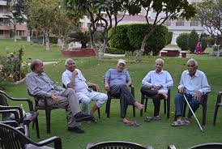
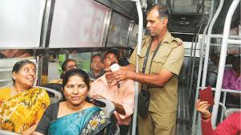
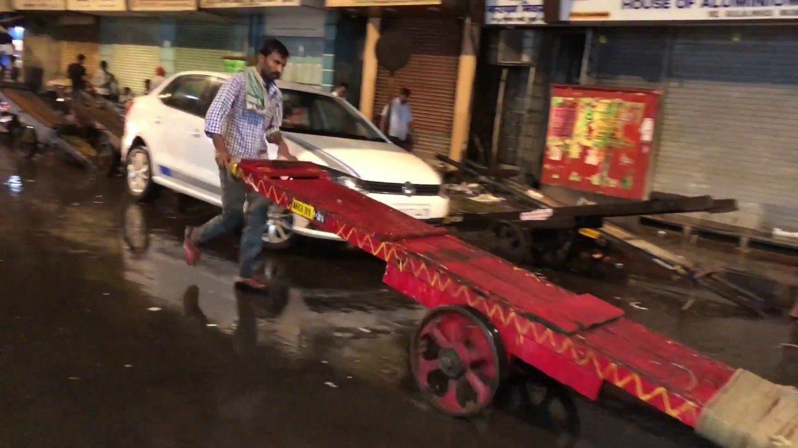

Pre-Communication
Welcome again, to come here you raised a lot of questions in your body, your atoms aligned in a way that is so unique that it won't happen again. Your brains working in perfect sync, each neuron firing and forming 1000 different connections with other neurons individually and giving you the superpower to see, hear, sense, etc. To visualize the world in your way and to read this article. Jogging 2 rounds along a long park near my backpackers in the evening, my legs responding to the football session I had very early morning in the cold and unsafe air in Bangalore, I go back to a moment where I was cycling on the marine lines bridge along the coast in the heavy rains and high tides in Mumbai and my friends trying to challenge me for a race, I thought how much has changed now. Coming back to my football match, I'm living in the game when these thoughts crossed, and suddenly the ball dribbles through my legs and onto the center forward. I fall back, the forward has a clear shot and manage to put my leg just in time and ball is out for a corner, Sitting in the corner of the park, I come back from the reflections of the day onto the ongoing people in the park - laughing, jumping, cycling in the park gym, small kids with their parents enjoying the slides. At the same time, some girls keep calling the cute kids to come to them while the kid is trying too hard to ignore them. A group of elderly people the ages of our fathers gather around a round seating of broad garden chairs, gossipping the best they can as they laugh, talk and communicate freely with tea glasses in their hands. I think about how much communication makes a person happier or relieved.

To-Communicate
A rickshaw driver treasuring everything he has under the seat and locks it and sleeps there in that small cubicle
A handcart man after a long day of labour with his naturally built body without the gym sleeps on the handcart without having any roof over his body nor a good blanket and no mattress(just a bedsheet), and somehow they arrange a pillow and laugh with other people over a cup of tea again.
Sinking back into my hostel's cozy sofa in the common room where I sit and observe while listening to songs with an ancient Armenian history book in my hand, a guy named Chris, who happens to be a part-time historian asked me about the book.
We discussed the Bourbons of Bhopal, how Jodha Akbar never existed, about historical monuments in Rajasthan, how Bollywood destroys places. All the perks from just having a book in your hand, without even initiating the talk & we went on a book shopping date. Imagining how lives could be better by talking. It's a hot sunny day sitting inside a bus wishing I had carried the pollution mask with me, the conductor moving barely through the space between the crowded line of people standing and selling tickets to everyone, one boy out of nowhere offered the biscuits he opened, another day, one guy asked in Kannada if he had lunch, as it was already lunchtime. My stop was the last, and by that time everyone had got down, he sat beside me, I asked basic things like how many rides you take daily, the myth revolving around KSRTC bus drivers driving drunk, I still think they do, reaching another level of dangerous rides from Wadala drag racers to Ksrtc overtakers, praying to God(alltheist at the moment) to come out alive & someone saying the cliche 'zinda jaana hai bhai.' The point with talking is that someone is there to listen to you, so when he was chatting, he found relief, when you get them out of their zone, of their usual ticket-ticket game and ask them as a human and treat them like one.


Now there is a person besides you or in front of you who may have some knowledge of something you may haven't heard of, and you could talk to them, about shows, books, religion, places, family, passion, all you have to do is just ask, seek interest, learn what they think of a mutual topic. These small things people do remember, some even become friends for years. Think of how you and your best friend met? Or any of your friends met, totally random, weirdly strange way, wasn't it? This is what every solo traveller has advised me.
They've been to the snow, mountains, places, experienced cultures, history, people, but they say this one thing - we go solo, not come alone. Nothing's planned, take that random conversation road and then see where your destiny takes you. People are amazing, the best things, more variety than food. Also, not all connections are real, overhearing the conversation as my friend puts it on loudspeaker
(a friend on the other end) Friend1: Hey bro, did you get the job?
Friend2: Daaruu!! That connection came through, and I got the job.
Friend1: Don't know about you but my links get me an extra pani-puri(Indian snack)
This would just be using that person for your advantage. Still, if you know the person well, you would be telling them to help you instead of asking for a favour :D, I won't encourage to get to know all the people, don't creep out people, have a genuine interest in knowing about other's lives and how they live it to better understand yours and improve, grow otherwise don't spoil their solitude,aloneness. Observe things & situations and adapt to it. But don't copy anyone--nothing from your heroes, idols, mentors, cool friends. Be yourself. Communicate. Question.
Question
Have you questioned everything, every law in the universe?
How the power of sounds & smell work wonders with your memory & emotion, why the abcd, why the heck math, why cruel people exist? If you're not, you're on vacation, or you have stopped working on yourself and the hunger to know things is dying.
How does smell trigger memories?
I remember a perfume from one of my oldest friends, the shampoo on her hair which triggers back her memories, mostly it's the first time smell that is associated with that person and stored deeply differently as they are not stored where the visual, touch or audio inputs are stored and processed, they take their time to process. Visual > audio In an Olympic race, they use guns and no visual screens to show to start the race cause perhaps those little milliseconds can make a big difference in a country's tally of medals. The smell is not only stored deep in memory in the amygdala but also linked to emotions. Perfume makers use this. People who want to feel attracted to others wear it. But we also label smells as powerful, strong, beautiful for love, and some are just sick, pungy, gasping for air.Answers
Now when you talk about questioning, you also speak about answering for other questions, contributing to this world in matters that you have enough knowledge and support the right people doing the good things. Help in the sustainable goals, in reducing global warming, in eradicating hunger, violence(all kinds).
We do spend billions in space missions, but we do not spend much on successfully providing meals to the hungry who depend on crowdfunding or big foundations. Also begs the question - is discovery more important than fulfilling the stomach?
Beware of the information you receive, verify it and no Einstein wasn't bad at math ever and also waving your phone around for network does not get you good signal only makes it worse, makes you look like an idiot and no there are not just 5 human senses but 9, your whole life is a lie.
This article is all about making the world a better place
Well, whenever I think of writing and look back at my previous 2 articles, god I was an amateur. Still, then I understand how we feel about old chats and when you see them, you can't really believe if that person was you, or old voice recordings that really make me laugh hysterically.
I write a lot with a pen & paper, It all soon will come out in the form of me reviewing books and story reading. It's like movie scripts, so what good would it do sitting in my books?
Some recommendations you'd like -
Recommended apps -
- Castbox (listen to podcasts)
- Ablo (chat & learn languages)
- Anybooks (read please)
- Down dog (Yoga please)
- eye care plus (Do some eye exercises will you?)
- kickstarter (new tech prototypes,ideas)
- money manager (you will save money when you record it)
- sky map(if your the telescope guy)
Documentaries to watch -
- BBC the human face series
- Genius series
- Tesla- Master of lightning
- The Wall Street code
- Cosmos and Planet earth series
Music -
- mad about you by hooverphonic
- yeh pal - prateek kuhad
The golden rules from an ISKCON prabhu- Rules and at the end the fonts, the images the visualizations help in reading and remembering so they are there.